ST185 fuse boxes - rev 7 (selected for build)
Claude Code, 2026-10-14. Your E2 answer: "make a separate new version so I can see it". Rev 7 is that version, and you picked it: P7 = A, U1 = A (DECISIONS R91). The POWER box below is selected for build. The LOGIC box is rebuilt here for your 3 mm rule (3 mm fix, R93); the battery relay block stays rev 6 (rev 6 page). Every wire simulated: sides, exploded, underneath, routing, the boxes cabled together. Your J1-J4 answers are built in (DECISIONS R94): J answers. The floating ribs and saddles you marked are joined to the base (R101): ribs + saddles supported.
The whole power distribution package, rev 7 next to rev 6
Same camera, same scale idea, every member together (R84): POWER (+ bus), LOGIC, battery relay block, 2 x VRC, CSB3. Rev 6 has the separate B rev3 bus bar (the long box at the back).

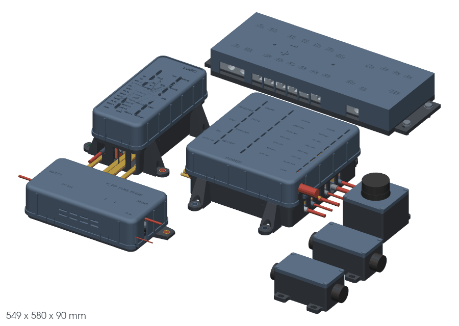
Wire count against rev 6
| Wire / cable | Rev 6 | Rev 7 | Change | Why |
|---|---|---|---|---|
| 1/0 cables landing at the glove box (H1 BAT+, H2 BAT-, H3 RADLOK+, H6a RADLOK-, H7 GND ID / IG) | 6 | 6 | 0 | same cables, now on M8 lugs in the POWER box bus zone |
| 1/0 link bus bar -> POWER box bar (ST185-CabinPower w_fb_in) | 1 | 0 | -1 | the + bar is the AMI bar now |
| 1/0 lug ends in the glove box | 8 | 6 | -2 | the link cable had a lug at each end |
| Relay feeds, AMI IN row -> relay terminal 30 | 6 | 6 | 0 | unchanged (they already bolt onto the bar) |
| AMI OUT row harness cables | 6 | 6 | 0 | unchanged |
| LOGIC feeds (BUS1 50 A, BUS2 k_efi 87) | 2 | 2 | 0 | unchanged |
| Small relay grounds to the NEG bar (k_htr 87a, k_pwr 85, k_rev 85) | 3 | 3 | 0 | same 3 wires; the two POWER-box ones now end in the same box (shorter) |
| Cables in total (lug ends row not counted) | 24 | 23 | -1 | one heavy 1/0 cable and its 2 lugs fewer |
What changed from rev 6
- No copper bar of its own in the POWER box. The bus bar's + bar (POS) runs the whole length: 1" x 1/4" tinned copper, 226 mm long (rev 6 POWER bar: 148). The 14 AMI positions bolt onto it exactly as in rev 6 (same pads, standoffs, relays, saddles, harness bundles).
- A bus zone at the back of the box (+62 mm deep). On the + bar: BAT+ IN, RADLOK+ and a spare M8 - those cables leave straight out of the outboard end. Beside it a NEG bar (same stock, 105 mm): BAT-, RADLOK-, GND ID, GND IG and one M8 for the small relay grounds - those leave straight out the back.
- A printed wall between NEG and POS (2.5 mm, 20 mm above the deck). Closest NEG part to a POS part: 5.8 mm, with the wall in between.
- B rev3 adapted to R76 (cut + drill only): its machined aluminium bars and 1/0 set-screw port blocks become plain tinned copper bars with M8 bolts (head captured in the deck, like every other bolt) and Klauke 6R8 lugs. Its universal bar U and the link strap / AMG fuse option are dropped (question U1 below).
- Feet: still four with M6 limiters; the rear-inboard foot moved round to the inboard end so no cable runs over a mounting bolt.
- Unchanged: LOGIC box and battery relay block (their feeds do not move); bend radius rule, belly pan, PA12 print rules, M6 limiters, 40 mm standoffs.
Rev 7 renders
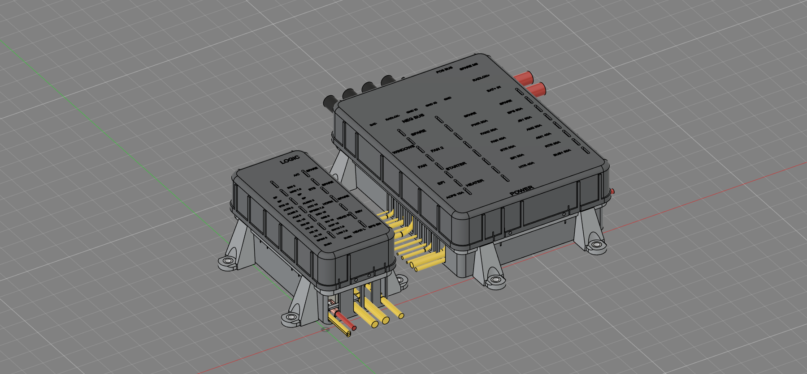
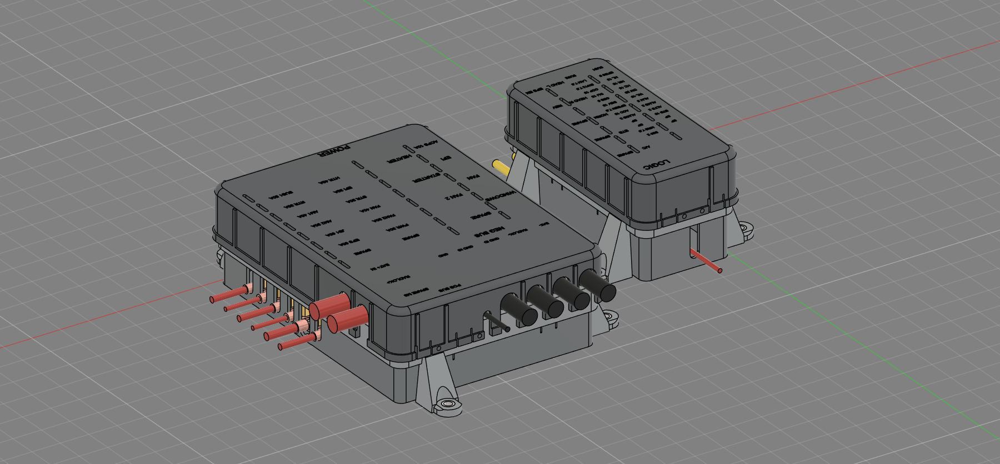
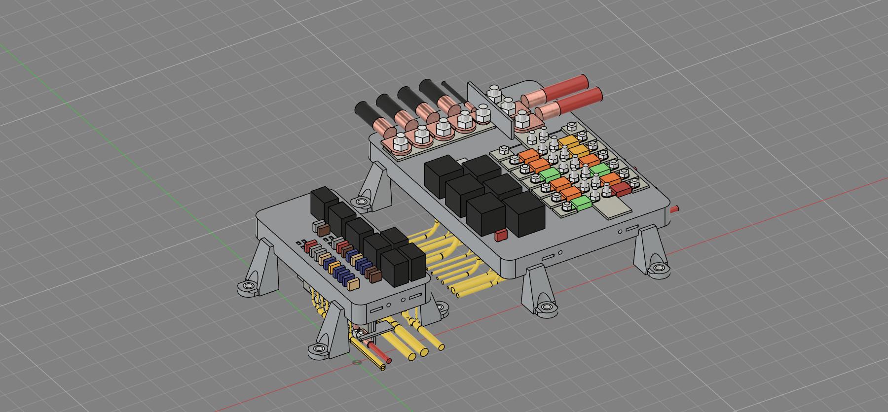
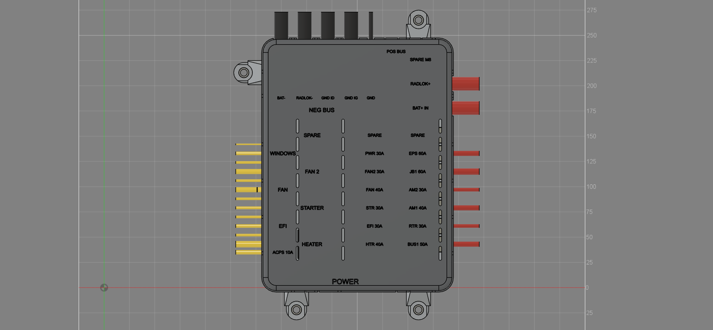
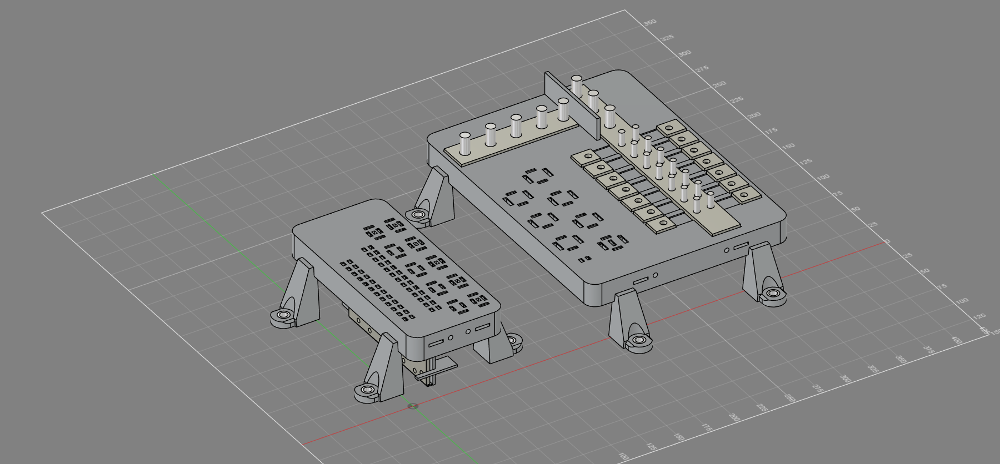
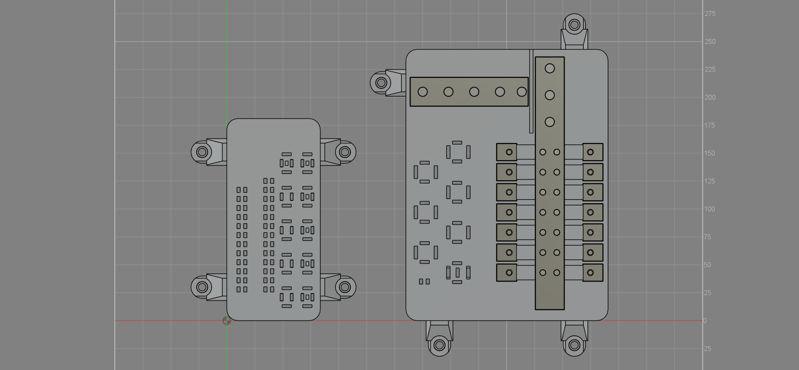
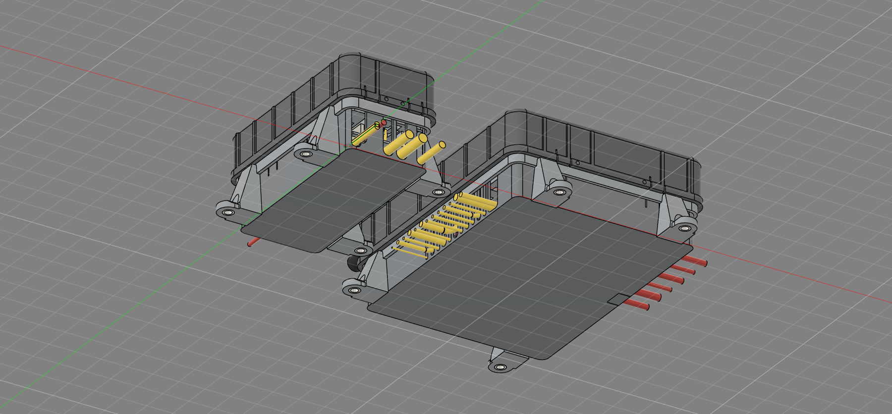
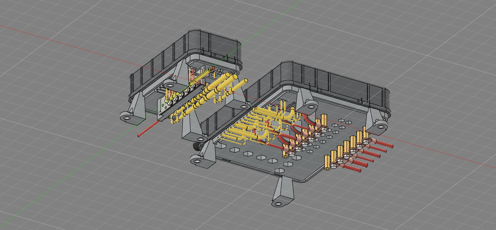
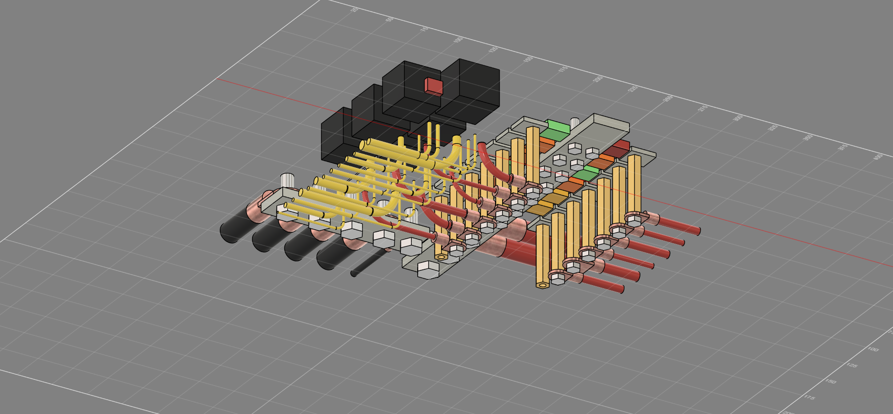
- harness bundles to the inboard edge
- relay feed: lug on the 40 mm standoff
- feed bends up R16 into terminal 30
- OUT lug on the 40 mm standoff
- OUT cables straight out the end
- 1/0 battery feed in
- NEG bus: grounds straight out the rear
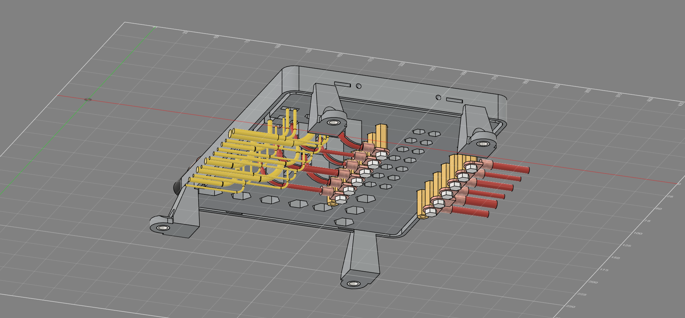
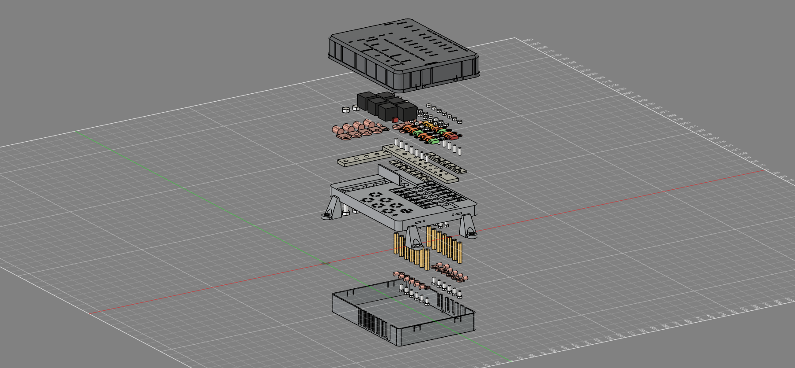
- cover (snaps on, 4 tongues)
- relays plug in from the top
- AMI fuses on the studs
- Keps nuts, 4 Nm max
- M5 set screws (studs)
- copper bar 25 x 6.35
- output pads 15 x 3
- base (deck on 4 angular legs)
- bar bolts up from below
- standoffs 40 mm (both rows, one part)
- cable lugs
- M5 x 10 lug bolts
- belly pan (snaps on)
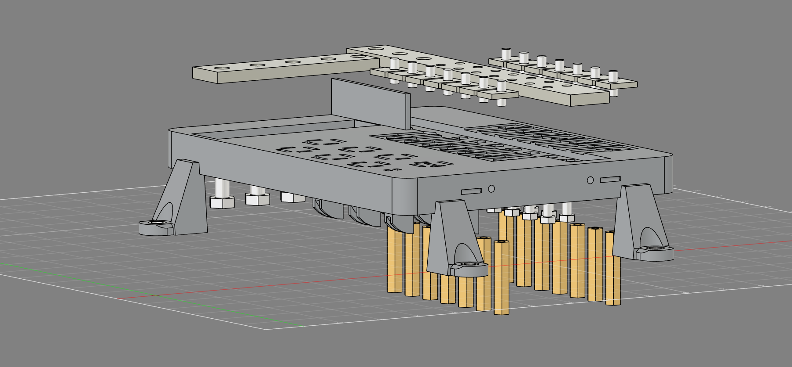
- lay the bar in its pocket
- lay the 14 pads in theirs
- bar bolts up through the hex head pockets
- 40 mm standoffs up into the hex holes, both rows
- set screw down through each pad into its standoff
- base, right way up
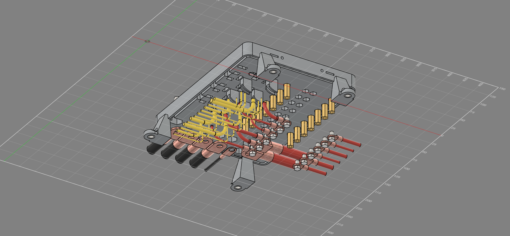
- crimp, push each terminal up into its cavity (wire side)
- relay feed lug on its long standoff (M5 x 10)
- feed round its saddle into terminal 30
- OUT lug on its standoff (M5 x 10)
- tie the bundles; they leave the inboard end
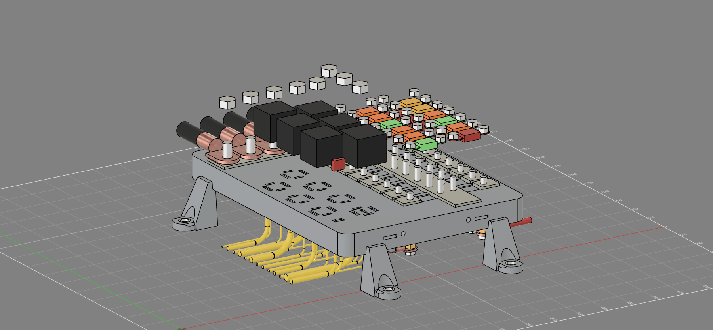
- AMI fuses on the studs
- Keps nuts, 4 Nm max
- relays plug in
- ACPS mini fuse
- 1/0 lug on the M8 stud
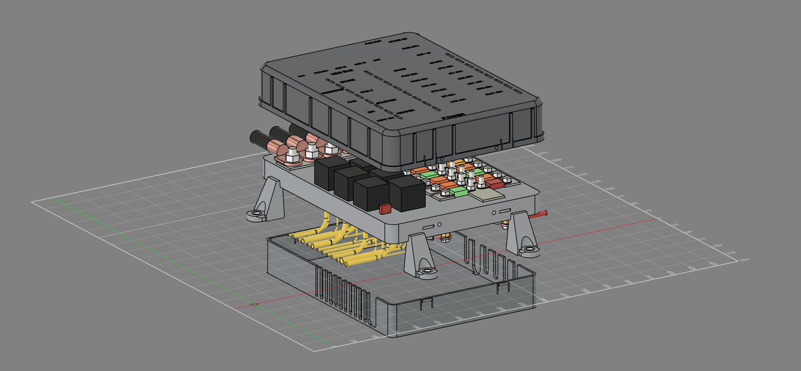
- belly pan snaps up into the skirt
- cover snaps down over the deck
- M6 through each foot (4), steel limiter


LOGIC: the 3 mm fix (Dan's rule)
Your question: do the bars under the LOGIC box touch? No - the Bus 1 and Bus 2 strips were 3.8 mm apart. But an M4 x 8 jumper bolt sticks 3.1 mm out of its own strip, so its tip was 0.68 mm from the other strip. Fix, same parts: the Bus 2 fuse column and both micro relay columns sit 2.5 mm further outboard and the box is 2.5 mm wider (79 -> 81.5). Bus 1 could not move inboard (its wire bundle meets the belly pan wall) and Bus 2 could not move alone (its fuses would hit the micro relays). A gate now fails any live-to-live gap under 3 mm (cad/fusebox/src/check_clearance.py, in check_all.py).
| Gap | Before | Now | Kind |
|---|---|---|---|
| strip bolt tip to the OTHER strip | 0.68 mm | 3.18 mm | live to live (Bus 1 / Bus 2) |
| any Bus 1 part to any Bus 2 part | not measured | 3.18 mm | live to live |
| Bus 1 strip to Bus 2 strip | 3.80 mm | 6.30 mm | live to live |
| jumper lug to the next lug, same strip | 1.86 mm | 1.86 mm | live to live, one circuit - not gated (J1 = A) |
| strip to its printed lips | 0.40 mm | 0.40 mm | live to plastic - kept (J2 = B) |
| jumper parts to the deck | 0.60 mm | 0.40 mm | live to plastic - kept (J2 = B) |
| jumper parts to the CAD tail bundles | 0.56 mm | 0.56 mm | live to insulation - kept (J2 = B) |
| new pan rib to the nearest live part | not measured | 0.50 mm | live to plastic - J2 = B rib |
| base (channel floor, guide walls) to the nearest live part | not measured | 0.40 mm | live to plastic - J2 / J4 |
| POWER belly pan to the nearest live part | 0.59 mm | 0.59 mm | live to plastic - kept (J2 = B) |
Your J1-J4 answers (DECISIONS R94)
| Question | Your answer | What changed |
|---|---|---|
| J1 jumper lugs 1.86 mm apart on one strip | A | Kept. The 3 mm rule is between different circuits: the lugs on one strip are one circuit, so that gap is reported, not gated, from now on (check_clearance.py SAME_CIRCUIT). Bus 1 to Bus 2 stays gated: 3.18 mm. |
| J2 live parts against plastic / insulation | B + your markup | (1) A printed rib on the LOGIC belly pan (x 12-14, 11.5 high) between the Bus 1 output wires and the Bus 1 strip bolt heads; the Bus 1 wires now stack between the pan's rounded corner and the rib. (2) A relief in the pan wall at the outboard micro relay column (inner face cut back 0.5 mm, to the 2.0 mm minimum - the base legs sit right outside it). (3) 121 terminal holes sized for their crimp barrel (table below), 38 pairs joined into one slot where the wall would have been under 2.0 mm, thinnest wall left between separate holes 0.00 mm. (4) 49 short guide walls (2.0 x 3.5 mm) under the decks between neighbouring holes. New gate: check_terminal_holes.py. |
| J3 two wires in one terminal | A, only if rated for the combined current | Done in ST185-CabinPower: HL and HR fuse outputs carry ONE 14 AWG wire each (w_hl_cp, w_hr_cp) to a splice (sp_hl, sp_hr) in the LOGIC front channel that feeds relay 30 and 86; the horn relay 86 now comes from the existing sp_hz splice (it was a jumper off its own terminal 30). Rating, combined current through the single wire and terminal: the ATM-15 fuse caps it at 15 A; 14 AWG M22759/16 is about 22 A as a single wire in free air at 80 C (HP Academy M22759/16 sheet), x 0.7 in a bundle (R89) = 15.4 A, so it passes; TE 880398-2: typical 33 A, 1-2.5 mm2 (TE page). No terminal holds two wires now. |
| J4 wires that left the box and came back in | B | A printed channel floor across the front (z 16.95-18.95, over the Bus 1 feed lug). To make room in front of the spine the Bus 1 strip starts at y 11.5 (was 8), Bus 2 at y 23.5 (was 21) and the Bus 1 feed lug sits at y 18 / z 13 (was 15 / 22). 7 wires now cross there, each on its own level (ETB z 20.2, HR30 z 23.1, HR z 24.2, HR86 z 25.4, HL30 z 27.8, HL z 28.9, HL86 z 29.9), the two splices stacked in the channel past the spine; nothing leaves the box and comes back. |
Terminal holes as built: crimp barrel sizes (TE product pages, read 2026-10-14) - superseded by R120 below
Hole = the crimped barrel + 0.4 mm a side. Barrel = the larger of the wire insulation and the smallest insulation the terminal is made for (an uninsulated terminal: the wire insulation still has to go in), plus the metal both sides. Round bore from under the deck up through the barrel zone (the lower 45 % of the terminal, est), at least 2 mm deep. A spare cavity gets the hole of the largest wire it takes. Metal thickness or length not on the TE page: 0.40 mm / 20 mm, marked est.
| Terminal | Insulation range | Metal | Length | Holes (box: count x diameter) |
|---|---|---|---|---|
| 880398-2 2.8 receptacle 1-2.5 mm2 (17-13 AWG), typical 33 A | 2.30-3.50 mm | 0.40 est | 26.5 | - |
| 1241388-2 MCP 2.8K receptacle 0.5-1 mm2, typical 15 A | 1.40-2.10 mm | 0.40 est | 20 est | - |
| 42281-1 FASTON .250 receptacle 18-14 AWG | 2.79-4.32 mm | 0.41 | 19.1 | - |
| 2293255-1 FASTON .187 receptacle 20-15 AWG | 2.30-3.30 mm | 0.33 | 20 est | - |
| 280919-2 FASTIN-FASTON .187 receptacle 20-15 AWG, locking lance | 2.31-3.30 mm | 0.25 | 16.0 | - |
| 280755-4 FASTON .375 receptacle 10-7 AWG | 5.00-7.00 mm | 0.51 | 29.0 | - |
| 280756-4 FASTON .375 receptacle 12-10 AWG | 3.40-5.10 mm | 0.51 | 29.0 | - |
| 62998-2 FASTON .250 receptacle 10-8 AWG | 5.84-7.11 mm | 0.43 | 19.7 | - |


Joined slots (wall under 2.0 mm): BUS1-1 + BUS1-1 IN; BUS1-10 + BUS1-10 IN; BUS1-11 + BUS1-11 IN; BUS1-12 + BUS1-12 IN; BUS1-2 + BUS1-2 IN; BUS1-3 + BUS1-3 IN; BUS1-4 + BUS1-4 IN; BUS1-5 + BUS1-5 IN; BUS1-6 + BUS1-6 IN; BUS1-7 + BUS1-7 IN; BUS1-8 + BUS1-8 IN; BUS1-9 + BUS1-9 IN; BUS2-1 + BUS2-1 IN + M1 30 + M1 85 + M1 86 + M1 87; BUS2-10 + BUS2-10 IN; BUS2-11 + BUS2-11 IN + M4 30 + M4 85 + M4 86 + M4 87; BUS2-12 + BUS2-12 IN; BUS2-13 + BUS2-13 IN; BUS2-2 + BUS2-2 IN; BUS2-3 + BUS2-3 IN + BUS2-4 + BUS2-4 IN + M2 30 + M2 85 + M2 86 + M2 87; BUS2-5 + BUS2-5 IN; BUS2-6 + BUS2-6 IN; BUS2-7 + BUS2-7 IN; BUS2-8 + BUS2-8 IN + M3 30 + M3 85 + M3 86 + M3 87; BUS2-9 + BUS2-9 IN; M10 30 + M10 85 + M10 86 + M10 87; M5 30 + M5 85 + M5 86 + M5 87; M6 30 + M6 85 + M6 86 + M6 87; M7 30 + M7 85 + M7 86 + M7 87; M8 30 + M8 85 + M8 86 + M8 87; M9 30 + M9 85 + M9 86 + M9 87; ACPS + ACPS IN; R1 30 + R1 85 + R1 86 + R1 87 + R1 87a; R2 85 + R2 86 + R2 87; R3 85 + R3 86 + R3 87; R4 30 + R4 85 + R4 86 + R4 87; R5 30 + R5 85 + R5 86 + R5 87; R6 85 + R6 86 + R6 87; R7 30 + R7 85 + R7 86 + R7 87.
Terminal cavities: hole sized by everything that passes, self-locking terminals (DECISIONS R120, R121, Dan 2026-10-15)
Hole (R120): the largest cross-section, along the insertion axis, of everything that goes through - the contact box, the crimped barrels on the thickest insulation the terminal accepts (so GXL or thicker wire always fits), the wire behind them, and the 880398-2 stop flange - + 0.4 mm a side, a combined (rectangular) outline. Lock (R121): the terminal goes up from under the deck, contact box first, and snaps in: above its neck (where the insulation barrel stops when seated) the cavity steps in to the box - the ledge - and opens a window from the lance tip up to the seat, so the lance springs out over the ledge; the deck blade slot above (narrower than the box) stops it the other way. Relays and fuses are held by blade friction only; the cover stays as it is. Where the relay / fuse pin spacing leaves under 2.0 mm, neighbouring cavities share one opening (R73 kept) and each terminal locks on the side with room (lance that way). M8 = A (R123): the micro relay coil terminal is TE 280919-2 (locking lance) instead of 2293255-1, and the micro relay columns sit 2.0 mm further out (LOGIC 2.0 wider) so the Bus 2 outputs keep their ledges; B only where no lance terminal exists - the heater relay R1 (62998-2, 8 AWG on 6.3 blades): a printed retainer clip under it, threaded onto its wires before crimping, snaps into its collar. Every cavity in the current STEP is from before R120 / R121: all 121 are recut at the next rev 7 Fusion rebuild (check_terminal_holes.py --list).
| Terminal | Box W x H (TE drawing) | Insulation range | Lock | Holes (box: count x size x by y) |
|---|---|---|---|---|
| 880398-2 2.8 receptacle 1-2.5 mm2 (17-13 AWG), typical 33 A | 5.60 x 4.10 | 2.30-3.50 mm | lance both sides of the blade width, springs out 1.60, tip 9.70 below the contact end (est.) | LOGIC 39 x 9.40 x 5.10; POWER 1 x 9.40 x 5.10 |
| 1241388-2 MCP 2.8K receptacle 0.5-1 mm2, typical 15 A | 4.40 x 4.40 | 1.40-2.10 mm | lance through the blade, springs out 0.80, tip 6.30 below the contact end (est.) | LOGIC 11 x 5.20 x 5.20; POWER 1 x 5.20 x 5.20 |
| 42281-1 FASTON .250 receptacle 18-14 AWG | 7.49 x 3.45 (H est.) | 2.79-4.32 mm | lance through the blade, springs out 1.25, tip 7.37 below the contact end (est.) | LOGIC 20 x 8.29 x 5.94; POWER 1 x 5.94 x 8.29; POWER 14 x 8.29 x 5.94 |
| 2293255-1 FASTON .187 receptacle 20-15 AWG | 5.60 x 3.00 (H est.) | 2.30-3.30 mm | no lance - swapped (R123) | - |
| 280919-2 FASTIN-FASTON .187 receptacle 20-15 AWG, locking lance | 5.60 x 2.30 (H est.) | 2.31-3.30 mm | lance through the blade, springs out 1.20, tip 5.00 below the contact end (est.) | LOGIC 20 x 4.60 x 6.40 |
| 280755-4 FASTON .375 receptacle 10-7 AWG | 11.10 x 3.80 | 5.00-7.00 mm | lance through the blade, springs out 1.45, tip 10.65 below the contact end (est.) | POWER 6 x 8.82 x 11.90 |
| 280756-4 FASTON .375 receptacle 12-10 AWG | 11.10 x 3.80 | 3.40-5.10 mm | lance through the blade, springs out 1.45, tip 10.65 below the contact end (est.) | POWER 6 x 6.92 x 11.90 |
| 62998-2 FASTON .250 receptacle 10-8 AWG | 7.62 x 3.20 (H est.) | 5.84-7.11 mm | retainer clip (R123 B) | POWER 2 x 8.77 x 8.77 |
Optional cover screws (R122): beside each of the 4 cover catches on every box, an M3 brass heat-set insert (McMaster 94459A140) in a boss behind the base skirt (hung from the deck plate; on the battery block it stands on the floor) and an M3 x 10 cap screw (Accu SSCF-M3-10-A4) through a 3.4 mm hole in the cover band, 13 mm from the catch centre - clear of the tongue. The snaps stay the main hold. The belly pans have no tab, so no screw.
| Terminal | Wire OD | RNF-100 build-up (under the insulation crimp) | Built-up OD (est.) | Ends |
|---|---|---|---|---|
| 280756-4 | 2.97 | RNF-100-1/8 | 3.61 | 2 |
| 280919-2 | 1.57 | RNF-100-3/32 | 2.42 | 3 |
| 280919-2 | 1.85 | RNF-100-3/32 | 2.61 | 7 |
| 280919-2 | 2.06 | RNF-100-3/32 | 2.76 | 4 |
| 42281-1 | 1.85 | RNF-100-3/32 + RNF-100-1/8 | 3.32 | 15 |
| 42281-1 | 2.06 | RNF-100-1/8 | 2.91 | 6 |
| 42281-1 | 2.41 | RNF-100-1/8 | 3.16 | 6 |
| 62998-2 | 5.13 | RNF-100-1/4 | 6.03 | 2 |
| 880398-2 | 2.06 | RNF-100-3/32 | 2.76 | 4 |
The 87a cavities have no harness wire today, so they keep their plain blade slot: an 87a terminal next to 85 / 86 would leave only 0.4 mm of wall (the micro relay pin pattern), so a future 87a wire needs its own look.
Ribs and saddles supported (DECISIONS R101)
Your markup 2026-10-15: "the little ribs and the wire radius runners are just floating. fill in the gaps between relay positions under the ribs and add material under the radius runners". They were joined to the base, but only by a sliver: a guide wall crossing the gap between two relay positions had cavity tower over its ends only, and each POWER bend saddle met the deck only where the relay tower was. Now:
- POWER, 6 saddles (top face 8-15 % backed before): the back of the saddle runs on up into the deck plate (it used to stop at the tower bottom).
- Nothing else changed (your call: "i like them as they are. just fix the floating pieces i mentioned"). Floating = under 50 % of the top face on solid material; every other hanging feature is above that and stays as it was (LOGIC: 49 of 49 left alone, POWER: 0 of 6 left alone).
- Every printed part of all three boxes (POWER, LOGIC, battery relay block: base, pan, cover) is one solid - one body, one lump, one shell in Fusion and one connected mesh in its STL. New HARD gate
cad/fusebox/src/check_printed_solid.py(incheck_all.py) checks all three things. - The LOGIC front channel floor is a shelf carried by the spine. It is connected, but nothing can go under it: the Bus 1 feed lug sits there.
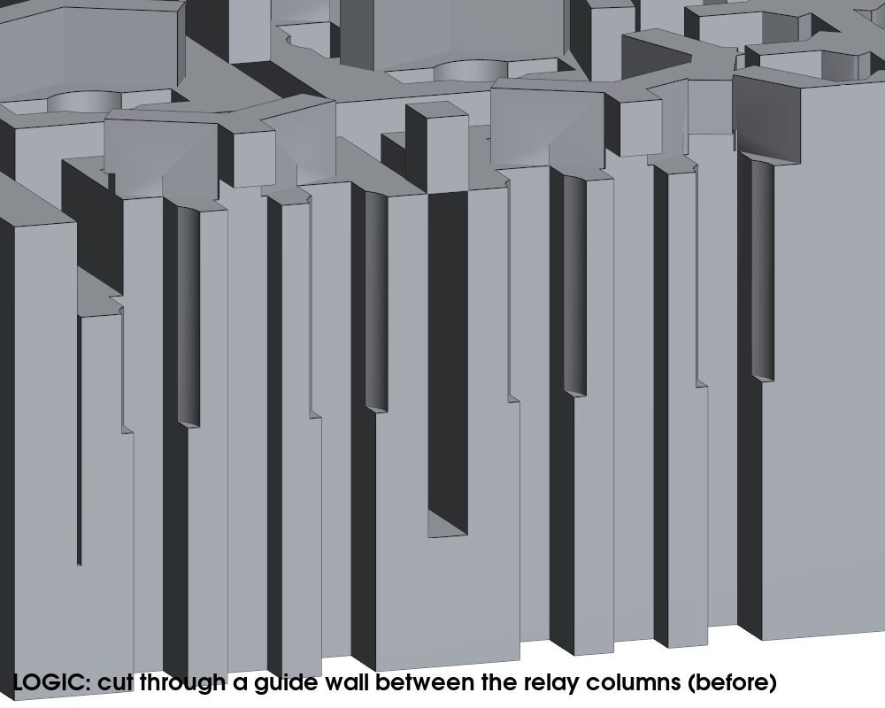
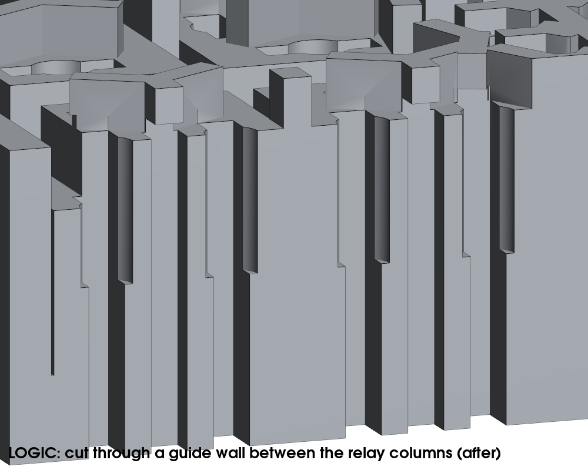
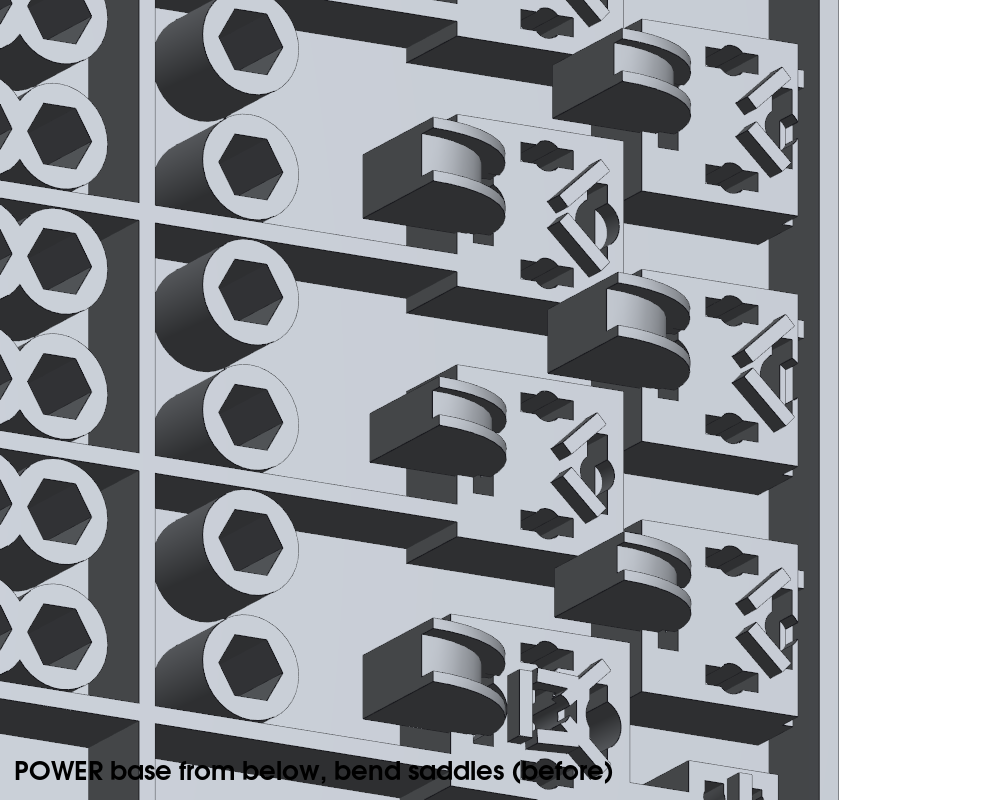
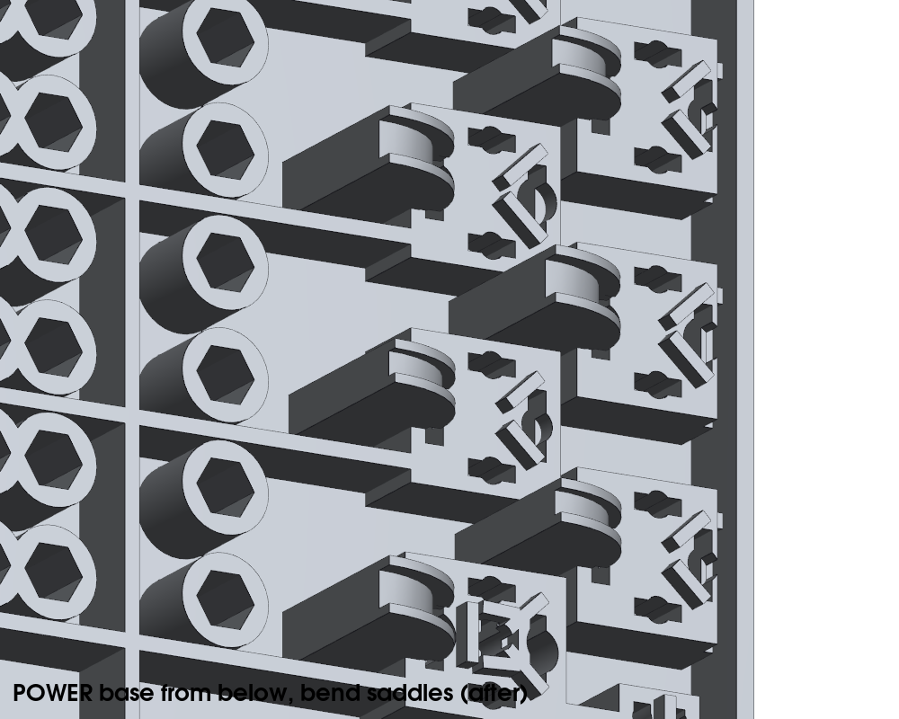
Wall sweep: every printed part (DECISIONS R128)
Your call 2026-10-16: "fix the ones you found as long as they don't alter the function and installability of the parts". The R127 gate (walls over 1.95 mm, every feature attached by 3 mm or more) found 411 thin-wall and 32 attachment spots on the nine printed parts (counted with the corrected checker). Fixed by rule in the build, nothing moved that a terminal, relay, fuse, cover, pan, screw, cable or mounting point uses:
- LOGIC base: one solid block under the deck plate, as the POWER base (R127) - the towers, collars and slivers between them are inside it.
- Relay / fuse blade slots only above the receptacle seat (the R120 cavity is the hole below); an 87a with no terminal is as deep as the blade reaches; the normally-open micro relays (HEAD L / R, HORN, ETB) have no 87a slot at all.
- A strip under 2.0 mm left between two openings of a joined cavity group, or between a cavity / hex pocket and the belly-pan groove, is cut away (the R120 join rule carried through); no lock ledge is touched (checked on all 119 lance cavities).
- Slanted guide walls that crossed a straight one (left only triangular slivers) are left out; the straight walls stay.
- All 8 mounting legs solid (outside, foot, M6 hole and socket unchanged); battery block relay platform and fuse pedestal solid, rim 4.0 (was 3.0, grown inward); bus-zone barrier wall 3.0 (was 2.5, grown away from the NEG bar).
- Fuse-body recesses level with the pad seat (0.4 under the fuse body, was 0.6); two LOGIC spine bolt passes 1.9 apart joined into one slot; two pan exit notches closer than 2.0 joined; a pan floor under a notch thickened downward to 2.0; cover labels 0.5 deep (2.0 of top left).
What has to stay thin is a named exemption - the build records a box round each one and the gate lists it by name (spec.WALL_EXEMPT):
| Exemption | Why it stays |
|---|---|
| seat lip | R121: the deck top over each receptacle is the stop the terminal seats against; HOLE top_gap = 1.0 sets how far the relay / fuse blade goes into the receptacle (thicker = less blade engagement); webs between neighbouring blade slots follow the pin spacing |
| 87a slot | micro relay pin spacing (TE 1308028): the 87a blade slot sits 1.9 from the 85 / 86 cavities on the change-over and spare positions (the normally-open relays have no 87a slot any more) |
| cover catch pocket | snap: the cover tongue bump sits in this pocket in the 3.0 skirt / rim; the skirt can neither grow (outline) nor move |
| cover screw insert | R122: the M3 heat-set insert hole in its boss beside the catch |
| pan catch pocket | snap: the belly-pan tongue bump sits in this pocket in the 3.0 skirt just above its bottom edge; the pan groove and the outline fix the skirt |
| pan snap tongue | snap: the pan tongue between its two slots has to flex; its bump is the catch |
| cover snap tongue | snap: the cover tongue between its two slots has to flex; its bump is the catch |
| cover screw hole | R122: the 3.4 screw hole lines up with the insert 9.5 under the deck top - the 2.5 cover band keeps 1.8 under it |
| label | rev 4 etched names (Dan: "the lid labels were fine as they were"): the PA12 between letter strokes, 0.5 deep; the cover top under the text is 2.0 |
| notch at corner | a cable exit notch (its size and place set by its cable) runs into a rounded corner of the cover / pan: the notch side meets the curved wall at a slant; widening it opens the corner, moving it moves the cable |
| relay cavity web | attachment only: the PA12 between the cavities of a micro relay - its size follows the TE pin spacing and the R120 hole sizes, and it joins the box at its corners between the cavities (2.0-2.9); the walls themselves pass W |
| strip lip | LOGIC bus strip lips: 0.9 between the strip (on it) and the belly-pan floor (0.45 under it); thicker moves the strips or the pan |
| Part | Thin-wall spots | Attachment spots | Volume |
|---|---|---|---|
| Power_Base_PA12_printed | 0 | 0 | 818.9 cm3 |
| Power_Pan_PA12_printed | 0 | shell | 157.1 cm3 |
| Power_Cover_PA12_printed | 0 | shell | 195.7 cm3 |
| Power_Retainer_R1_PA12_printed | 0 | shell | 1.6 cm3 |
| Logic_Base_PA12_printed | 0 | 0 | 323.5 cm3 |
| Logic_Pan_PA12_printed | 0 | shell | 75.8 cm3 |
| Logic_Cover_PA12_printed | 0 | shell | 96.3 cm3 |
| BattRelay_Base_PA12_printed | 0 | 0 | 170.2 cm3 |
| BattRelay_Cover_PA12_printed | 0 | shell | 106.8 cm3 |
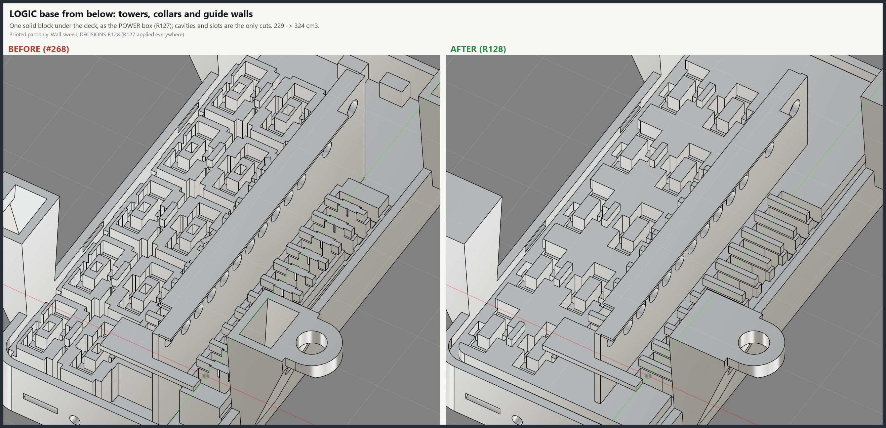
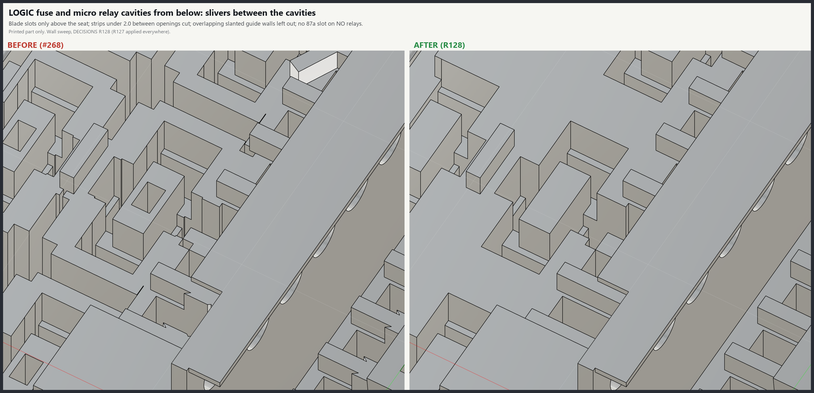
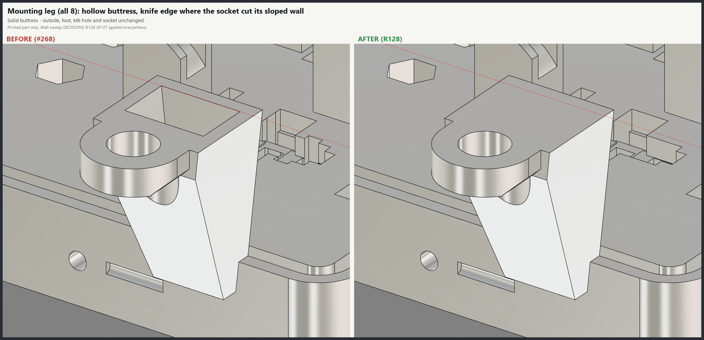
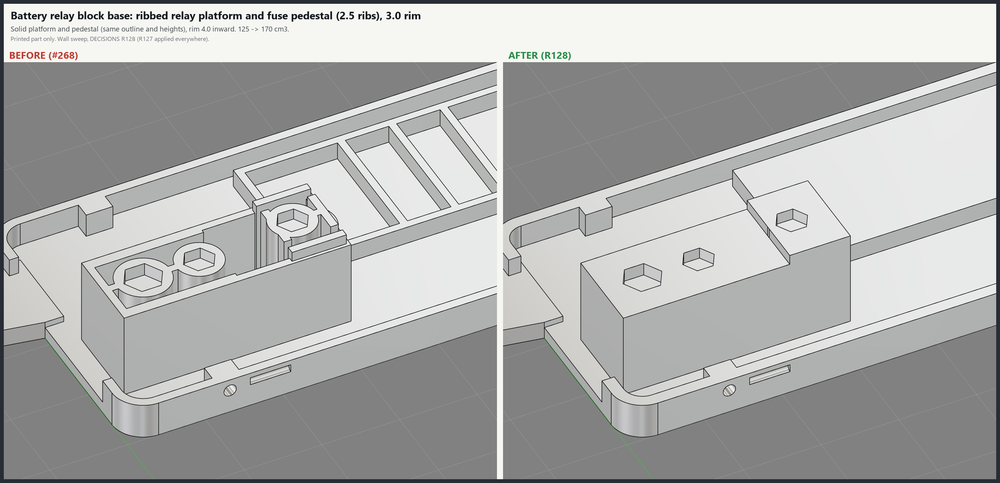
Every wire in place (simulation)
ST185-CabinPower, -HeavyDC, -EngineRoom-C), at its real cavity, with its real gauge (outside diameter), insulation colour, ident bands and terminal part, bundled into the exit it leaves by (the CAD lanes) with the bend rule: 3 x OD where it is tied into its bundle, 10 x OD free outside. cad/fusebox/src/wiring_sim.py plans it, render_wired_rev7.py draws and checks it in Fusion (not saved). Nothing in the design was changed for it.What the simulation found
| Check | Result |
|---|---|
| Do all wires fit through the exits / notches? | yes - every exit. Tightest: POWER exit at 79.0, 1 wires, round bundle 3.6 mm in a 4.6 mm notch |
| Does any wire block a fuse or relay from being pulled? | no. (The only hits are the battery block HCR150 and its own cables: a screw-terminal relay, its terminal nuts come off before it lifts out.) |
| Do the covers still close? | yes - no wire touches a cover |
| Wire through printed plastic | none (J2 = B: the pan wall relief at the outboard relay column) |
| Wire insulation against bare live metal | none (J2 = B: the pan rib keeps the Bus 1 wires off the strip bolt heads) |
| Live to live (3 mm rule) | no new bare metal in the simulation; the gate result above stands (J1 = A: same-strip gaps reported, not gated) |
| Wire to wire | 45 places where two modelled wires share space (they cross in the crowded LOGIC lanes and under the deck); insulated wires crossing is normal, so the 3 mm rule does not apply. Closest: 0.00 mm |
| Two wires crimped in one terminal | none (J3 = A: one wire per terminal, the HL / HR splices) |
| LOGIC wires that leave and come back in | none (J4 = B: 7 wires cross in the front channel - w_fb_k_etb_30_cp, w_hl_30_cp, w_hl_86_cp, w_hl_cp, w_hr_30_cp, w_hr_86_cp, w_hr_cp) |
Exits
| Box | Exit (lane) | Wires (CAD drew) | Round bundle | Notch | Packed in the notch: top | Fits |
|---|---|---|---|---|---|---|
| LOGIC | 10.5 | 7 (7) | 6.4 mm | 7.5 mm | z 12.7 (deck 38.5) | yes |
| LOGIC | 40.5 | 10 (13) | 7.4 mm | 9.5 mm | z 11.5 (deck 38.5) | yes |
| LOGIC | 53.5 | 14 (15) | 8.9 mm | 10.0 mm | z 12.8 (deck 38.5) | yes |
| LOGIC | 72.0 | 6 (8) | 5.6 mm | 7.8 mm | z 9.2 (deck 38.5) | yes |
| POWER | 35.0 | 3 (3) | 4.3 mm | 6.1 mm | z 8.0 (deck 32.0) | yes |
| POWER | 43.0 | 2 (2) | 6.8 mm | 8.1 mm | z 11.8 (deck 32.0) | yes |
| POWER | 52.0 | 2 (2) | 3.1 mm | 4.3 mm | z 8.0 (deck 32.0) | yes |
| POWER | 61.0 | 1 (1) | 3.6 mm | 5.2 mm | z 7.8 (deck 32.0) | yes |
| POWER | 70.0 | 2 (2) | 3.1 mm | 4.3 mm | z 8.0 (deck 32.0) | yes |
| POWER | 79.0 | 1 (1) | 3.6 mm | 4.6 mm | z 7.8 (deck 32.0) | yes |
| POWER | 88.0 | 2 (2) | 3.1 mm | 4.3 mm | z 8.0 (deck 32.0) | yes |
| POWER | 97.0 | 1 (1) | 5.1 mm | 6.7 mm | z 9.3 (deck 32.0) | yes |
| POWER | 106.0 | 2 (2) | 3.1 mm | 4.3 mm | z 8.0 (deck 32.0) | yes |
| POWER | 115.0 | 1 (1) | 5.1 mm | 6.7 mm | z 9.3 (deck 32.0) | yes |
| POWER | 124.0 | 2 (2) | 3.1 mm | 4.3 mm | z 8.0 (deck 32.0) | yes |
| POWER | 133.0 | 1 (1) | 3.6 mm | 5.2 mm | z 7.8 (deck 32.0) | yes |
| POWER | 142.0 | 1 (1) | 1.9 mm | 3.2 mm | z 6.0 (deck 32.0) | yes |
Each box, wired


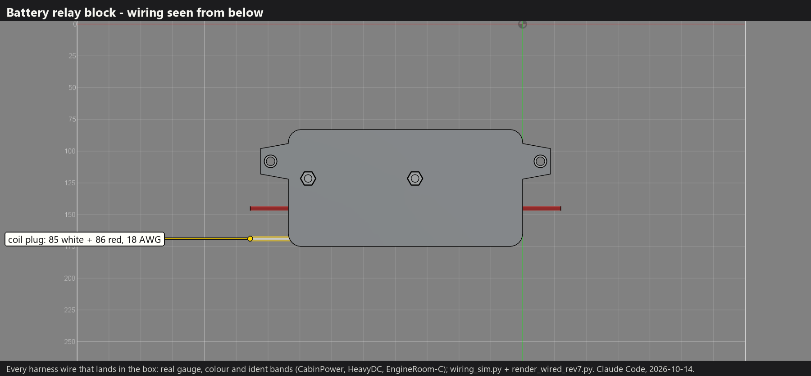
Typical arrangement, cabled together
The real mount spot in the glove box is still to be measured (Route 1), so the shelf and the trunk floor are stand-ins and the LOGIC box sits 55 mm inboard of its render spot (bend room for the POWER box tails). Cable directions follow the routes: H1 / H2 back along the RH sill, RADLOK + / - forward to the RH firewall, GND ID to the left kick, GND IG to the right kick; Bus 1 / Bus 2 and k_efi 86 box to box; the relay grounds (k_htr 87a, k_pwr 85, k_rev 85) round to the NEG bar ring; the rest of the tails forward in grey looms (CabinPower). 1/0 bends at 3 x OD with a P-clamp each side. Lugs: Klauke 6R8 (bus zone), 2R5 / 3R5MS (OUT row), 2R5 (LOGIC feeds), 1R6 (battery block) - the parts-list parts.


LOGIC rev 7 build renders
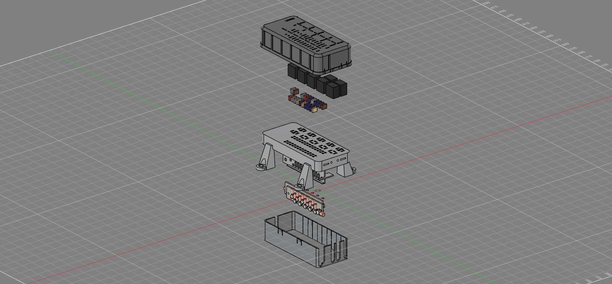
- cover (snaps on)
- micro relays
- mini fuses
- base: deck, cavity towers, spine between the strips
- Bus 1 / Bus 2 strips on edge, slide in from the rear
- input jumper lugs, TE PIDG 53941-1
- M4 x 8 + spring washer into the tapped strip
- feed lugs, M5 x 10 into the strip
- belly pan (snaps on)
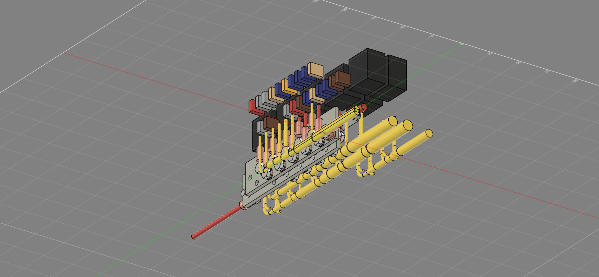
- Bus 1 fuse wires
- Bus 2 fuse wires
- micro relay wires, inboard column
- micro relay wires, outboard column
- all leave the front edge
- fuse input jumpers drop straight into their lugs
- bus strips on edge, printed spine between
- Bus 1 feed in at the front
- Bus 2 feed in at the rear
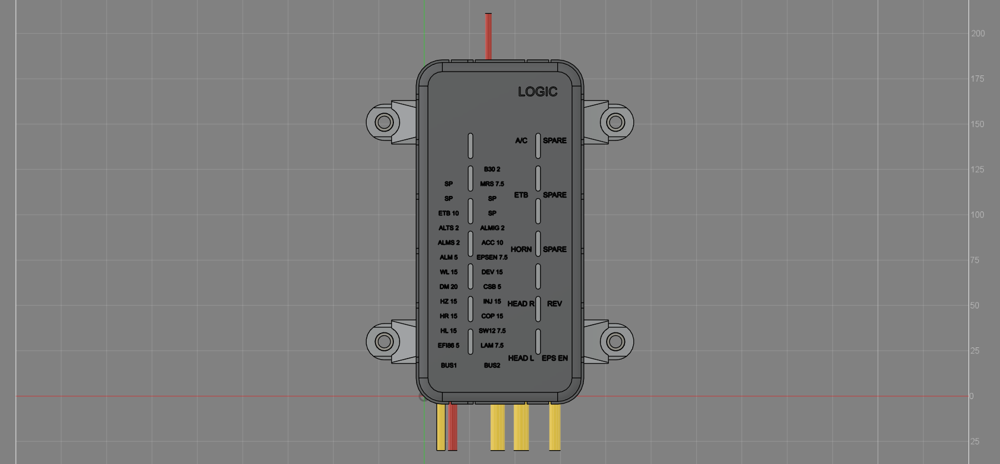
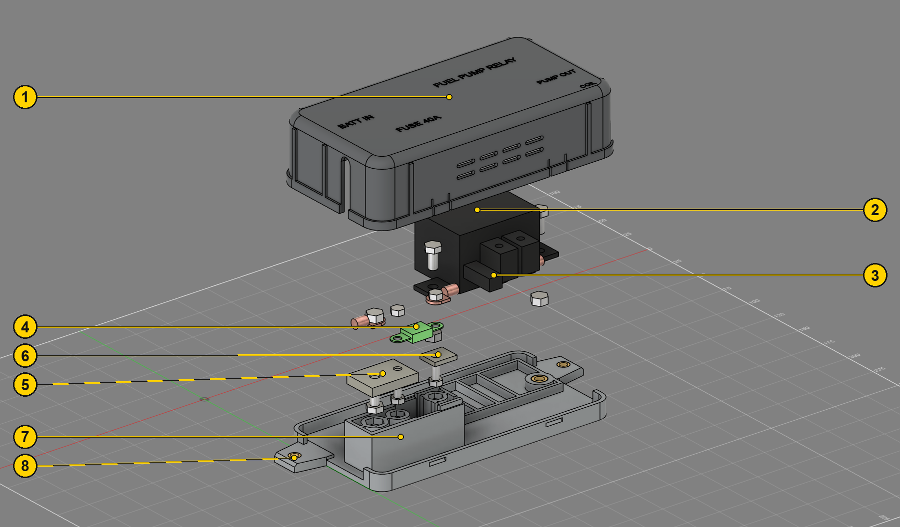
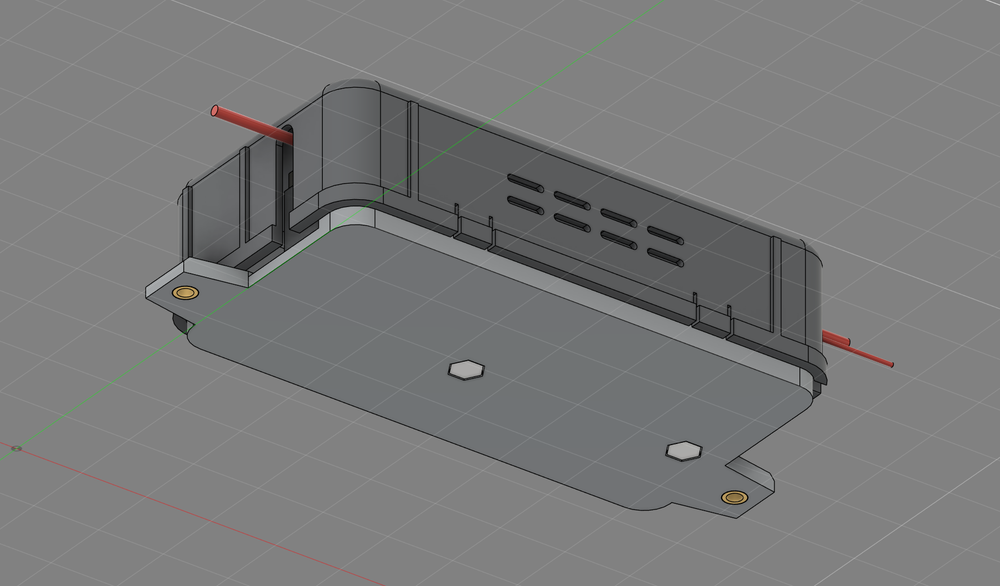
Bus zone terminals
| Bar | Terminal | Cable | Lug | Leaves |
|---|---|---|---|---|
| POS + | BAT+ IN | H1, 1/0 | Klauke 6R8 (M8) | outboard end, straight |
| POS + | RADLOK+ | H3, 1/0 | Klauke 6R8 (M8) | outboard end, straight |
| POS + | SPARE | none yet | bolt + nut fitted | - |
| NEG - | BAT- | H2, 1/0 | Klauke 6R8 (M8) | rear, straight |
| NEG - | RADLOK- | H6a, 1/0 | Klauke 6R8 (M8) | rear, straight |
| NEG - | GND ID | H7, 1/0 | Klauke 6R8 (M8) | rear, straight |
| NEG - | GND IG | H7, 1/0 | Klauke 6R8 (M8) | rear, straight |
| NEG - | GND | k_htr 87a 14 AWG, k_pwr 85 18 AWG, k_rev 85 20 AWG | their own M8 rings, stacked (harness parts) | rear, straight |
Checks (Fusion, rev 7 build)
| Check | Result |
|---|---|
| LOGIC any Bus 1 part to any Bus 2 part (3 mm) | 3.18 mm |
| LOGIC strip bolt tip to the other strip (3 mm) | 3.18 mm |
| POS 1/0 lug to lug (Dan's rule: 3 mm) | 4.00 mm |
| NEG lug to lug (3 mm) | 3.00 mm |
| nearest NEG part to POS part (wall between) | 5.80 mm |
| POS bus lug to nearest AMI output pad | 13.72 mm |
| AMI output pad to pad | 3.00 mm |
| lugs under the deck | 5.50 mm |
| belly pan to nearest live part | 0.59 mm |
| Cable bends (3 x OD supported / 10 x OD free, FAA AC 43.13-1B) | 63 checked, 1 fail |
| Interference between solid parts | none |
| Every printed part one solid, every rib / saddle backed (R101) | 9 parts, 1 lump each |
| Cable through printed plastic | none |
Cut + drill (R76: no milling)
| Piece | Stock | Length | Holes (from the front / inboard end, on the bar) |
|---|---|---|---|
| POS bar (bus + AMI inputs) | 1" x 1/4" tinned (MECCANIXITY B0CGJBRNJX), bar 1 | 226 mm | 14 x 5.5 mm: pairs 6.25 mm either side of the centre line at 33, 51, 69, 87, 105, 123, 141; 3 x 8.5 mm on the centre line at 168, 192, 216 |
| NEG bar | same stock, bar 2 | 105 mm | 5 x 8.5 mm on the centre line at 11.0, 34.0, 57.0, 80.0, 99.5 |
| Battery block bar | bar 1 (after the POS bar) | 36.5 mm | as rev 6 |
| Output pads (14 + 1) | 3 x 15 tinned (Bopaodao B09Z7NBLDK) | 17.5 mm each | as rev 6 |
POWER box parts list, rev 7 (with the bus bar in it)
Every line a real part with a link (R82; parts_lists.py --check). CSV: cad/fusebox/rev7/fusebox-parts-power.csv. LOGIC and battery block: the rev 6 lists, unchanged (cad/fusebox/fusebox-parts-logic.csv, -battrelay.csv).
| Group | Item | Part | Need | Own | Buy | $ line |
|---|---|---|---|---|---|---|
| Printed | Power Base (with the bus zone) | Power_Base_PA12_printed.stl + .step (PA12) | 1 | 0 | 1 | 81.89 |
| Printed | Power Pan (belly pan) | Power_Pan_PA12_printed.stl + .step (PA12) | 1 | 0 | 1 | 15.71 |
| Printed | Power Cover | Power_Cover_PA12_printed.stl + .step (PA12) | 1 | 0 | 1 | 19.58 |
| Copper | POS bus bar 25.4 x 6.35 x 226 mm + NEG bus bar 25.4 x 6.35 x 105 mm, tinned | MECCANIXITY B0CGJBRNJX | 2 | 0 | 2 | 52.38 |
| Copper | Output pads 15 x 3 x 17.5 mm, tinned (14 here + 1 in BATTRELAY) | Bopaodao B09Z7NBLDK | 1 | 0 | 1 | 51.99 |
| Fuses | AMI bolt-down fuse 30 A | AMI-30 | 6 | 0 | 6 | 31.80 |
| Fuses | AMI bolt-down fuse 40 A | AMI-40 | 3 | 0 | 3 | 15.90 |
| Fuses | AMI bolt-down fuse 50 A | AMI-50 | 1 | 0 | 1 | 5.30 |
| Fuses | AMI bolt-down fuse 60 A | AMI-60 | 2 | 0 | 2 | 10.60 |
| Fuses | ACPS mini blade fuse 10 A | ATM-10 | 1 | 0 | 1 | 0.55 |
| Relays | Heater relay k_htr, 1 form C, 12 V, 680 ohm | 1-1414687-0 | 1 | 0 | 1 | 9.00 |
| Relays | Relay k_efi / k_str / k_fan (Maxi ISO F7, 1 form A, 680 ohm) | 1-1414147-0 | 3 | 3 | 0 | |
| Relays | Relay k_fan2 / power (Maxi ISO F7, bracket, 560 ohm) | 1-1393304-0 | 2 | 2 | 0 | |
| Terminals | Maxi relay load receptacle 9.5 x 1.2, 12-10 AWG | 280756-4 | 6 | 0 | 8 | 3.20 |
| Terminals | Maxi relay load receptacle 9.5 x 1.2, 10-7 AWG | 280755-4 | 4 | 0 | 6 | 3.00 |
| Terminals | Relay coil receptacle 6.3 x 0.8, 18-14 AWG (F7 85/86 + heater 85/86) | 42281-1 | 12 | 14 | 0 | 0.00 |
| Terminals | Heater relay load receptacle 6.3 x 0.8, 10-8 AWG (30, 87) | 62998-2 | 2 | 0 | 4 | 1.20 |
| Terminals | Heater relay 87a receptacle 6.3 x 0.8, 18-14 AWG | 42281-1 | 1 | 2 | 0 | 0.00 |
| Terminals | Mini fuse receptacle 2.8 x 0.8, 17-13 AWG (ACPS input, 14 AWG) | 880398-2 | 1 | 0 | 2 | 0.30 |
| Terminals | Mini fuse receptacle 2.8, 20-18 AWG (ACPS output, 18 AWG) | 1241388-2 | 1 | 2 | 0 | 0.00 |
| Terminals | Insulation build-up sleeve 1/4, 2 ends x 15 mm | RNF-100-1/4-0-STK | 1 | 0 | 1 | 2.53 |
| Terminals | Insulation build-up sleeve 1/8, 15 ends x 15 mm | RNF-100-1/8-0-STK | 1 | 0 | 1 | 2.55 |
| Terminals | Insulation build-up sleeve 3/32, 12 ends x 15 mm | RNF-100-3/32-0-STK | 1 | 0 | 1 | 2.83 |
| Printed | Retainer clip under the heater relay R1 (R123 B) | Power_Retainer_R1_PA12_printed.stl + .step (PA12) | 1 | 0 | 1 | 0.20 |
| Hardware (optional) | OPTIONAL cover backup: M3 brass heat-set insert, one beside each cover catch | 94459A140 | 4 | 0 | 4 | 1.60 |
| Hardware (optional) | OPTIONAL cover backup: M3 x 10 cap screw, one beside each cover catch | SSCF-M3-10-A4 | 4 | 0 | 5 | 2.50 |
| Lugs | Tubular lug 10 mm2, M5 hole (8-10 AWG) | Klauke 2R5 | 9 | 0 | 11 | 7.70 |
| Lugs | Tubular lug 16 mm2, M5 hole (6 AWG) | Klauke 3R5MS | 1 | 0 | 2 | 2.20 |
| Lugs | Ring lug 12-10 AWG, M5 / #10 hole | 36161 | 2 | 0 | 4 | 1.00 |
| Lugs | Tubular lug 50 mm2, M8 hole (the 6 1/0 bus cables) | Klauke 6R8 | 6 | 0 | 7 | 18.20 |
| Standoffs | Brass hex standoff M5 female-female, 8 AF, 40 mm (ONE part number for all 14) | Essentra 301540040050 | 14 | 0 | 14 | 8.40 |
| Fasteners | Set screw M5 x 12 (stud on each pad standoff) | RS 137-809 | 14 | 0 | 16 | 1.92 |
| Fasteners | Hex bolt M5 x 10 (lug under each standoff, IN and OUT rows) | RS 287-3921 | 14 | 0 | 16 | 1.60 |
| Fasteners | Hex bolt M5 x 16 (AMI input stud on the bar, head captured) | RS 263-2205 | 14 | 0 | 16 | 1.92 |
| Fasteners | Keps nut M5 (AMI input + output ears, 2 per position) | RS 264-6432 | 28 | 0 | 31 | 2.17 |
| Fasteners | Hex bolt M8 x 25 (bus studs: 3 POS + 5 NEG, head captured) | RS 190-276 | 8 | 0 | 9 | 2.70 |
| Fasteners | Hex nut M8 (bus studs) | RS 530-769 | 8 | 0 | 9 | 0.72 |
| Fasteners | Plain washer M8 (bus studs) | RS 797-6068 | 8 | 0 | 9 | 0.45 |
| Mounting | Compression limiter, feet (4) | EFC 10S00056 | 4 | 0 | 5 | 1.50 |
| Total (est.) | 194 | $365.09 |
Printed parts
| Part | Rev 7 size (mm) | Rev 7 volume | Rev 6 volume |
|---|---|---|---|
| Power_Base_PA12_printed | 212 x 307 x 72 | 818.9 cm3 | 361.6 cm3 |
| Power_Pan_PA12_printed | 174 x 238 x 35 | 157.1 cm3 | 120.4 cm3 |
| Power_Cover_PA12_printed | 189 x 252 x 42 | 195.8 cm3 | 160.0 cm3 |
The base is 307 mm long over the feet: check it against the printer bed.
Files
- Fusion:
ST185_fusebox_rev7(Default Project) - its own document, saved-as from rev 6;ST185_fusebox_rev6is untouched. - Local model files:
C:\projects\active\st185-link-ecu-config\cad\fusebox\rev7\(ST185_fusebox_rev7.f3d,ST185_fusebox_rev7_assembly.step,Power_*STEP / STL, the two bars as STEP). LOGIC / battery block files: rev 6,C:\projects\active\st185-link-ecu-config\cad\fusebox\. - Build:
cad/fusebox/src/build_fusion.pybuild(out_dir, rev=7); spec:spec.pyREV7.
Open questions (batch J)
Answered
P7 = A (rev 7 selected) and U1 = A (the B rev3 universal bar U stays out: the 2 spare AMI positions and the spare M8 on the + bar cover a new feed), Dan 2026-10-14, DECISIONS R91. The harness redraws that follow are OPEN-ITEMS row 118.